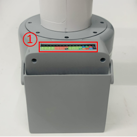
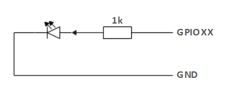
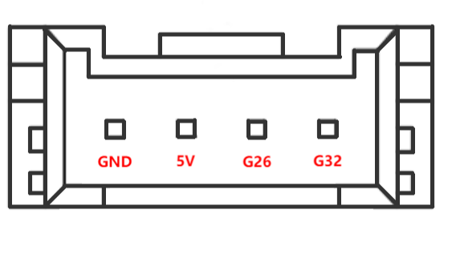

Electrical interface of the robot arm
1 Introduction
1.1 Base
- A. The interface on the front of the base is shown in Figure 2.1.8.2-1:

Figure 2.1.8.2-1 Front interface of F base
① Function interface group 1
② Function interface group 2
③ Function interface group 3
④ Function interface group 4
B. The interface on the top of the base is shown in Figure 2.1.8.2-2:

Figure 2.1.8.2-2 Interfaces on the base
- ① Function interface group 5
- C. The interfaces on the right side of the base are shown in Figure 2.1.8.2-3:

Figure 2.1.8.2-3 Interfaces on the right side of the base
- ① Power supply DC interface
1.2 Description of base interfaces
Note: The functional interface groups are all 2.54mm DuPont interfaces, and 2.54mm DuPont wires can be used externally.
A. Figure 2.1.8.2-4, Figure 2.1.8.2-5, Figure 2.1.8.2-6 and Figure 2.1.8.2-7 are the signal names of the four expansion interface groups on the front of the base. These interfaces are used to connect different Arduino development boards. Function interface group 1 and function interface group 4 can be used to expand development boards with the same pins as Arduino UNO, such as: Arduino UNO, Arduino MEGA 2560, etc.; Function interface group 2 and function interface group 3 can be used to expand development boards with the same pins as Arduino MKR WiFi 1010;

Figure 2.1.8.2-4 Function interface group 1

Figure 2.1.8.2-5 Function interface group 2

Figure 2.1.8.2-6 Function interface group 3

Figure 2.1.8.2-7 Functional interface group 4
B. Figure 2.1.8.2-8 shows the signal names of the functional interface group on the base. This part of the interface corresponds to each functional interface of the connected Arduino development board.

Figure 2.1.8.2-8 Functional interface group 5
C. Power DC interface: Use a DC power socket with an outer diameter of 6.5mm and an inner diameter of 2.0mm; the 12V 5A DC power adapter provided by the manufacturer can be used to power myCobot 280.
2 Electrical interface of the end of the robot
2.1 Introduction to the end of the robot
- A. The end of the robot is shown in Figure 2.1.8.2-9 and Figure 2.1.8.2-10:

Figure 2.1.8.2-9 End of the robot
① Servo interface
② Atom

Figure 2.1.8.2-10 End of the robot
① Functional interface group 6
② Grove
③ Type C
2.2 End interface description
- A. The definitions of each interface of functional interface group 6 are shown in Table 2.1.8.2-1:
| Label | Signal name | Type | Function | Remarks |
|---|---|---|---|---|
| 5V | 5V | P | DC 5V | |
| GND | GND | P | GND | |
| 3V3 | 3V3 | P | DC 3.3V | |
| G22 | G22 | I/O | GPIO22 | |
| G19 | G19 | I/O | GPIO19 | |
| G23 | G23 | I/O | GPIO23 | |
| G33 | G33 | I/O | GPIO33 |
Note:
I: Input only.
I/O: This function signal includes input and output combination.
When the tube angle is set as the output end, it will output a voltage of 3.3V.
The source current of a single tube angle decreases as the number of pins increases, from about 40mA to 29mA.
If a GPIO is set to output mode, it outputs a high-level signal, and the circuit connection is shown in Figure 2.1.8.2-11, and the LED light will light up.

Figure 2.1.8.2-11
B. Type C interface: can be used to connect and communicate with the PC and update the firmware.
C. Grove: Definition as shown in Figure 2.1.8.2-12

Figure 2.1.8.2-12 Grove
D. Servo interface: used for end extension gripper, currently supports matching adaptive gripper.
E. Atom: used for 5X5 RGB LED (G27) display and button function (G39)